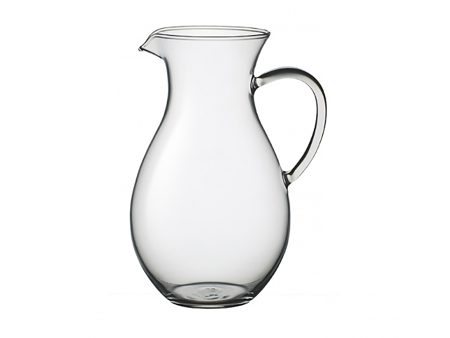
Džbány
Džbán KLASIK 0,5 l
Klasický džbán z varného borosilikátového skla SIMAX na vodu, džus, mléko, víno či pivo. Tepelně odolný (−40 °C až +300 °C), bez olova a kadmia, vhodný do myčky.
Varné borosilikátové sklo z české sklárny Kavalier s více než 185letou tradicí. Džbány, konvice, mísy, pekáče i zásobnice — Glass that Lasts.

Klasický džbán z varného borosilikátového skla SIMAX na vodu, džus, mléko, víno či pivo. Tepelně odolný (−40 °C až +300 °C), bez olova a kadmia, vhodný do myčky.
Klasický džbán z varného borosilikátového skla SIMAX na vodu, džus, víno či pivo. Tepelně odolný (−40 °C až +300 °C), bez olova a kadmia, vhodný do myčky.
Klasický džbán z varného borosilikátového skla SIMAX na vodu, džus, mléko, víno či pivo. Tepelně odolný (−40 °C až +300 °C), bez olova a kadmia, vhodný do myčky.
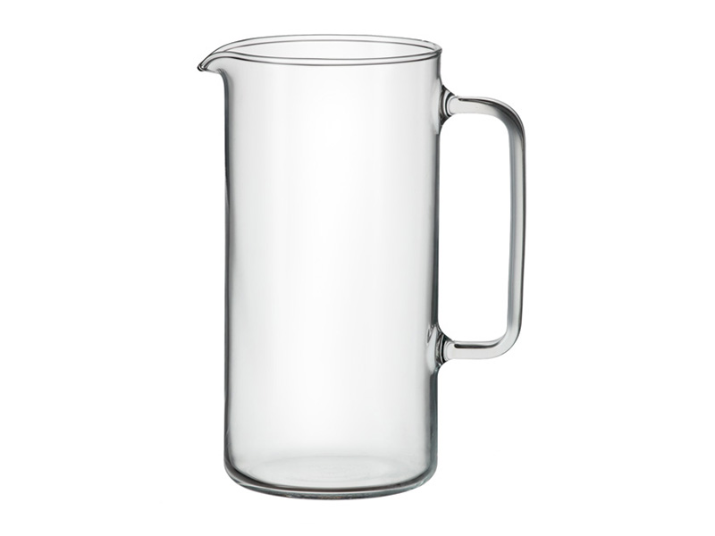
Skleněný džbán válcovitého tvaru z varného skla SIMAX — ideální na letní studené i horké nápoje, vodu, džus nebo ledový čaj. Tepelně odolný, vhodný do myčky.
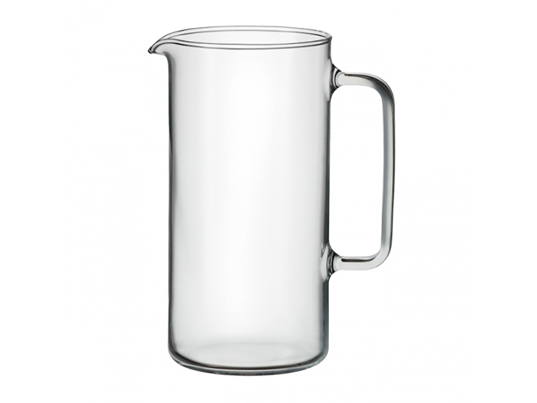
Skleněný džbán válcovitého tvaru z varného skla SIMAX — ideální na letní studené i horké nápoje, vodu, džus, mléko nebo ledový čaj. Tepelně odolný, vhodný do myčky.
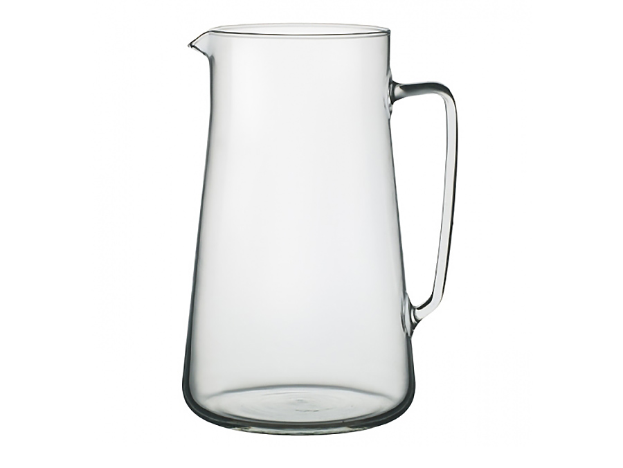
Elegantní džbán AGRA z varného borosilikátového skla SIMAX — minimalistický design s ergonomickým uchem. Vhodný na čaj, limonády, koktejly i pivo.
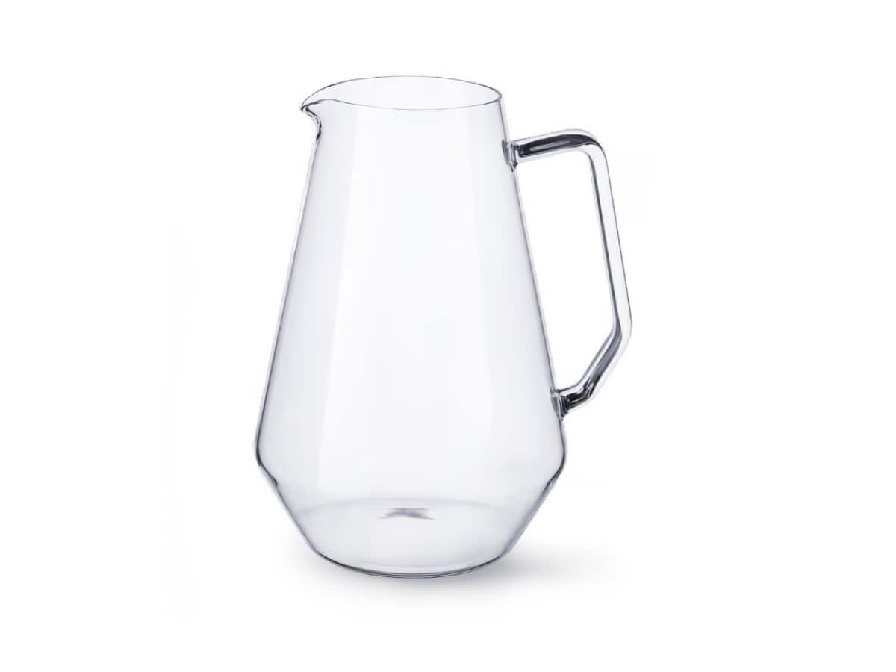
Stylový džbán DIAMOND z borosilikátového skla SIMAX s moderním designem. Vhodný na vodu, limonády, džusy i pivo. Tepelně odolný, bez olova a kadmia, do myčky.
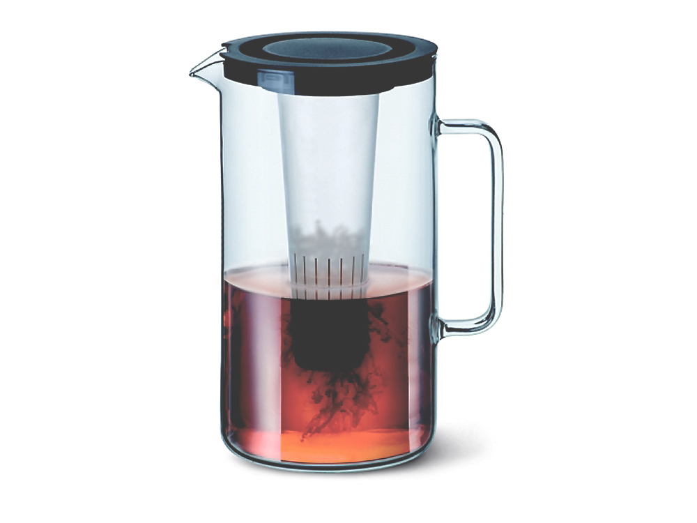
Džbán s plastovým víčkem, vložkou na led a sítkem na louhování čaje či bylinek. Vložky se vkládají do barevného víčka, lze použít i bez nich. Borosilikátové sklo SIMAX.
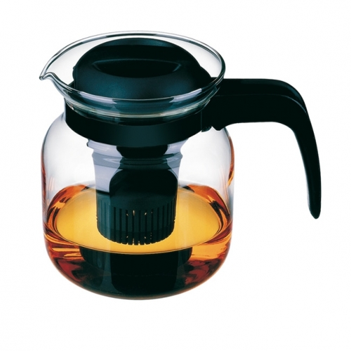
Malá konvice MATURA z borosilikátového skla SIMAX s montovaným plastovým víčkem a sítkem. Pro elektrický i plynový sporák s rozptylovačem plamene, vhodná do myčky.
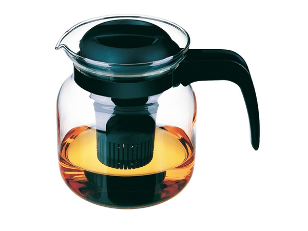
Konvice MATURA z borosilikátového skla SIMAX s montovaným plastovým víčkem a sítkem na louhování čaje. Pro elektrický i plynový sporák s rozptylovačem plamene.
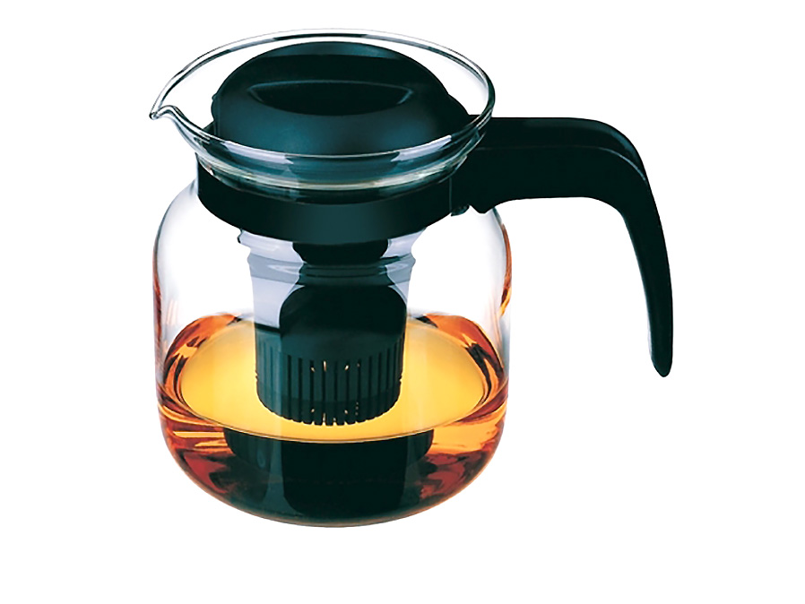
Konvice MATURA z borosilikátového skla SIMAX s montovaným plastovým víčkem a sítkem. Ideální pro všechny čaje, na elektrický i plynový sporák s rozptylovačem plamene.
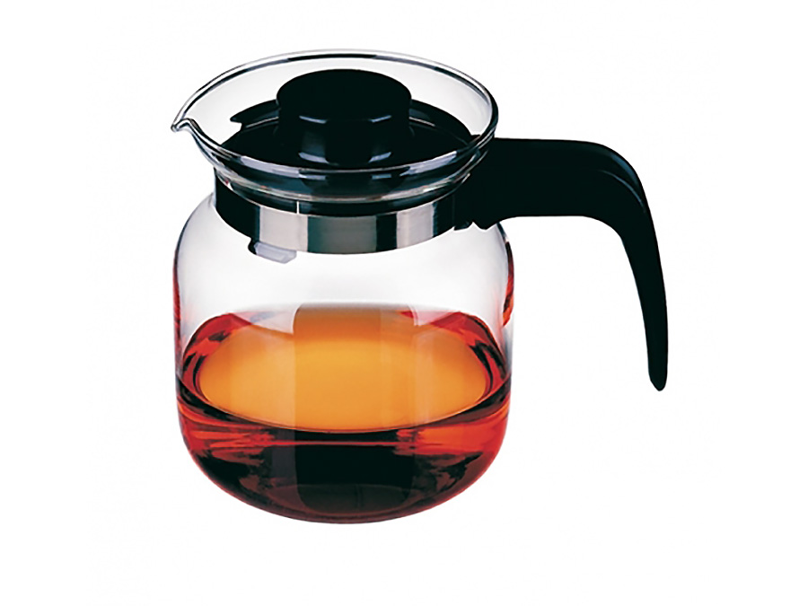
Konvice MATURA z borosilikátového skla SIMAX s montovaným plastovým víčkem (bez sítka). Ideální na všechny čaje, na elektrický i plynový sporák s rozptylovačem plamene.
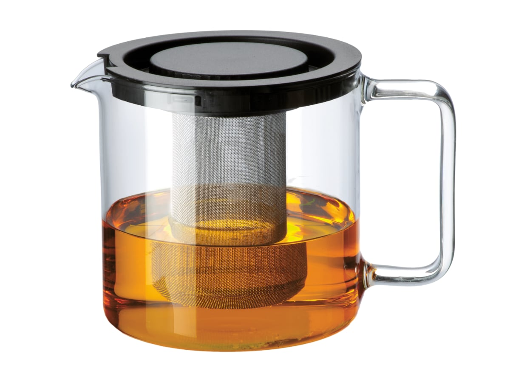
Konvice FROM z borosilikátového skla SIMAX s vyjímatelným kovovým sítkem zasazeným do uzávěru z tvrzeného plastu. Ideální pro čaj a kávu, vhodná do myčky.
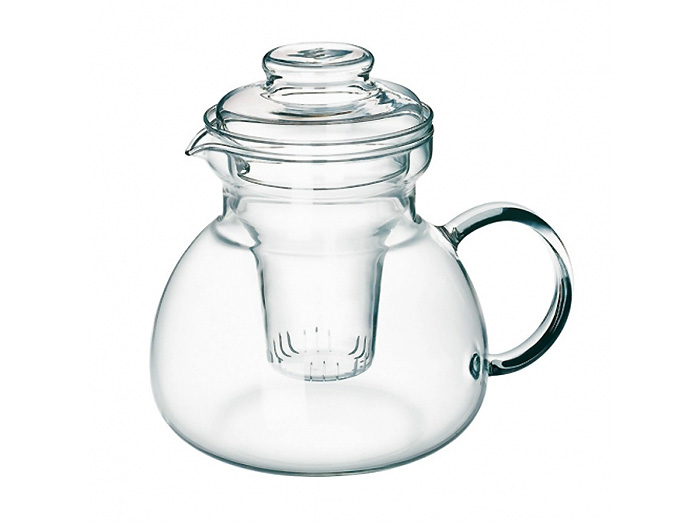
Exkluzivní celoskleněná konvice MARTA z borosilikátového skla SIMAX se skleněným vyjímatelným filtrem a poklicí. Lze používat i bez filtru, vhodná do myčky.
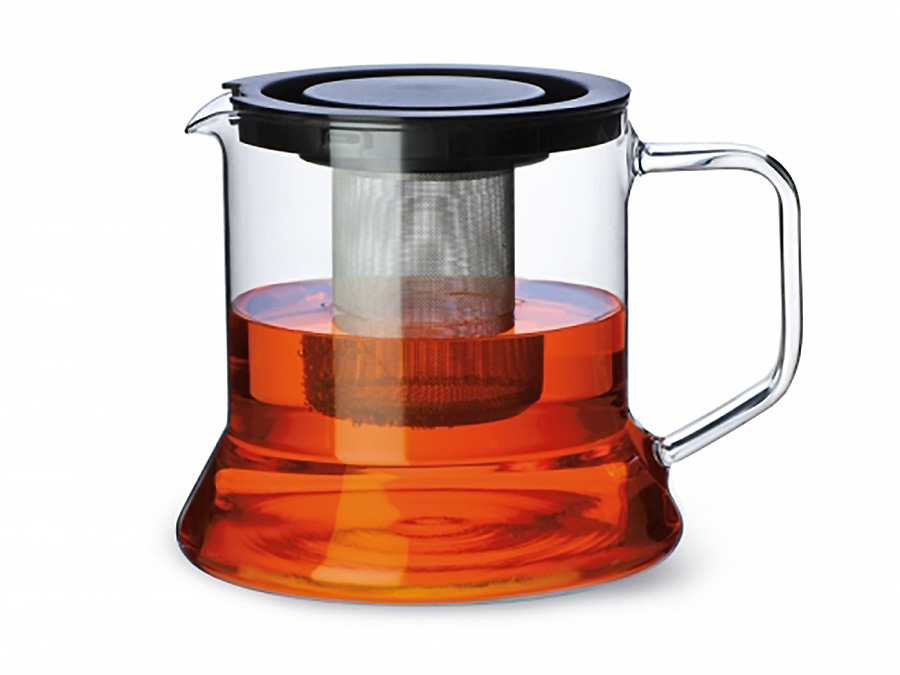
Exkluzivní konvice LOOK z borosilikátového skla SIMAX s odnímatelným nerezovým filtrem zasazeným do uzávěru z tvrzeného plastu. Ideální pro čaj a kávu.
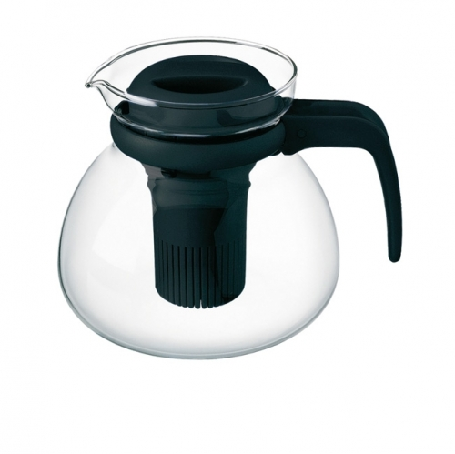
Konvice SVATAVA z borosilikátového skla SIMAX s montovaným plastovým víčkem a sítkem. Na elektrický i plynový sporák s rozptylovačem plamene, vhodná do myčky.
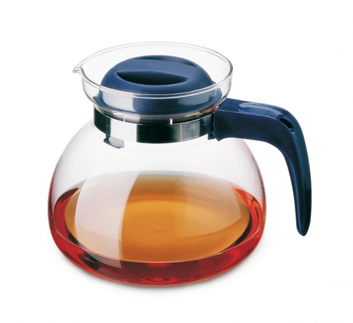
Konvice SVATAVA z borosilikátového skla SIMAX s montovaným plastovým víčkem (bez sítka). Vhodná pro větší objemy nápojů, na sporák s rozptylovačem, do myčky.
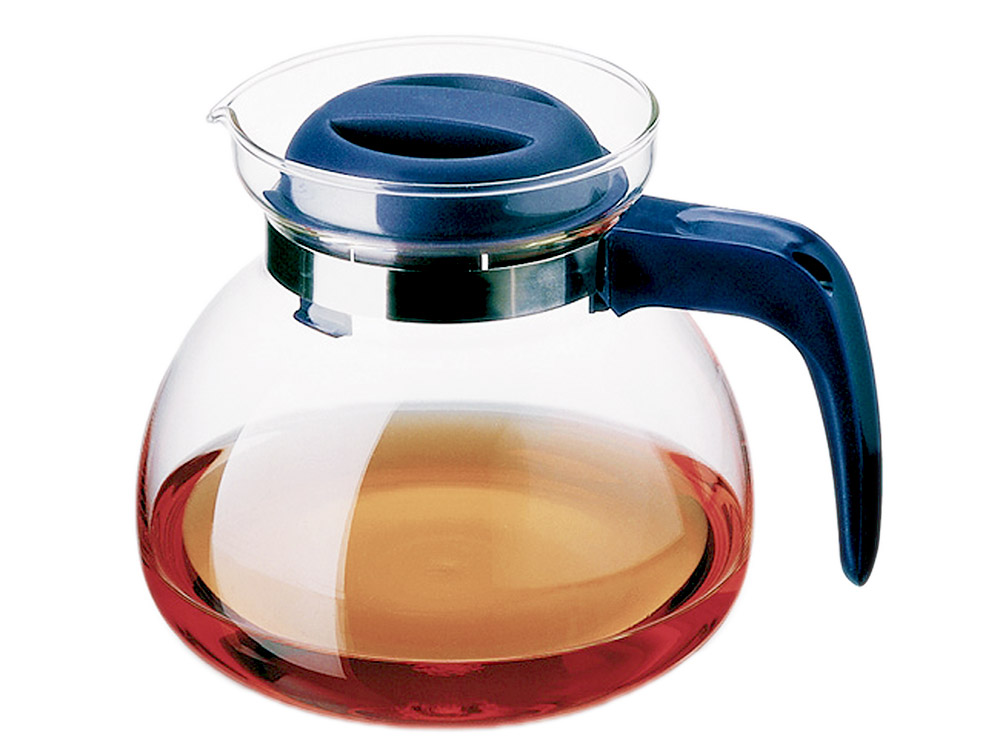
Velká konvice SVATAVA z borosilikátového skla SIMAX s montovaným plastovým víčkem — ideální pro větší rodiny nebo posezení s přáteli (až 9 hrnečků čaje).

Silnostěnná skleněná mísa BOWL na pečení, servírování salátů i míchání pokrmů. Borosilikátové sklo SIMAX — vhodná do myčky, mikrovlnné trouby a chladničky.

Silnostěnná skleněná mísa BOWL na pečení, servírování salátů i míchání pokrmů. Borosilikátové sklo SIMAX — vhodná do myčky, mikrovlnné trouby a chladničky.

Silnostěnná skleněná mísa BOWL na pečení, servírování salátů i míchání pokrmů. Borosilikátové sklo SIMAX — vhodná do myčky, mikrovlnné trouby a chladničky.
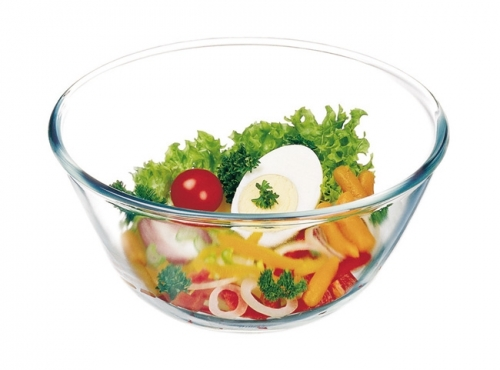
Silnostěnná skleněná mísa BOWL na pečení, servírování salátů i míchání pokrmů. Borosilikátové sklo SIMAX — vhodná do myčky, mikrovlnné trouby a chladničky.

Silnostěnná skleněná mísa BOWL na pečení, servírování salátů i míchání pokrmů. Borosilikátové sklo SIMAX — vhodná do myčky, mikrovlnné trouby a chladničky.

Velká skleněná mísa BOWL na pečení a přípravu či servírování salátů. Borosilikátové sklo SIMAX — vhodná do myčky, mikrovlnné trouby a chladničky.
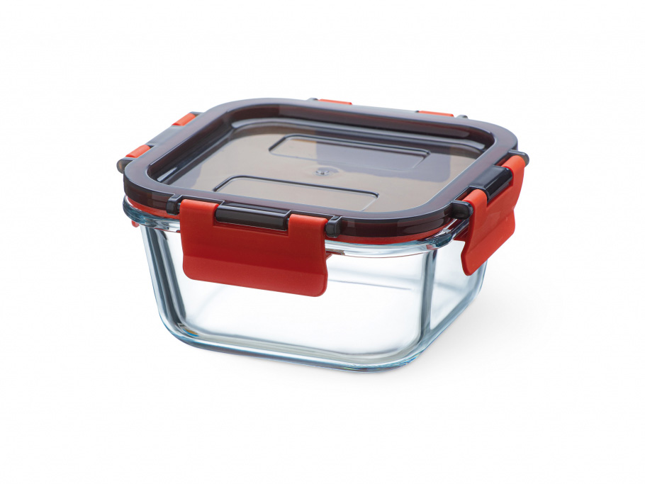
Skleněná dóza s těsnicím víkem klik-klak z borosilikátového skla SIMAX. Vhodná pro pečení, mikrovlnnou troubu, lednici, mrazák i přenos potravin.
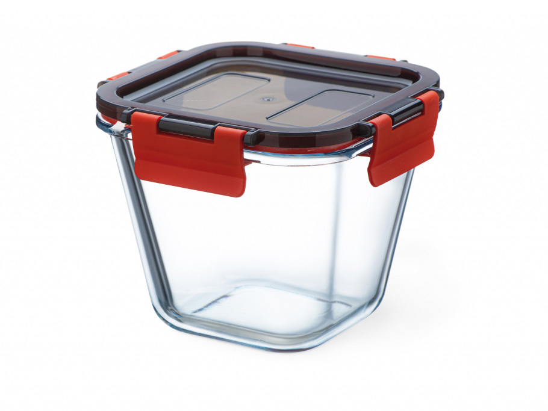
Čtvercová skleněná dóza s těsnicím víkem klik-klak z borosilikátového skla SIMAX. Vhodná pro pečení, mikrovlnnou troubu, lednici, mrazák i přenos potravin.
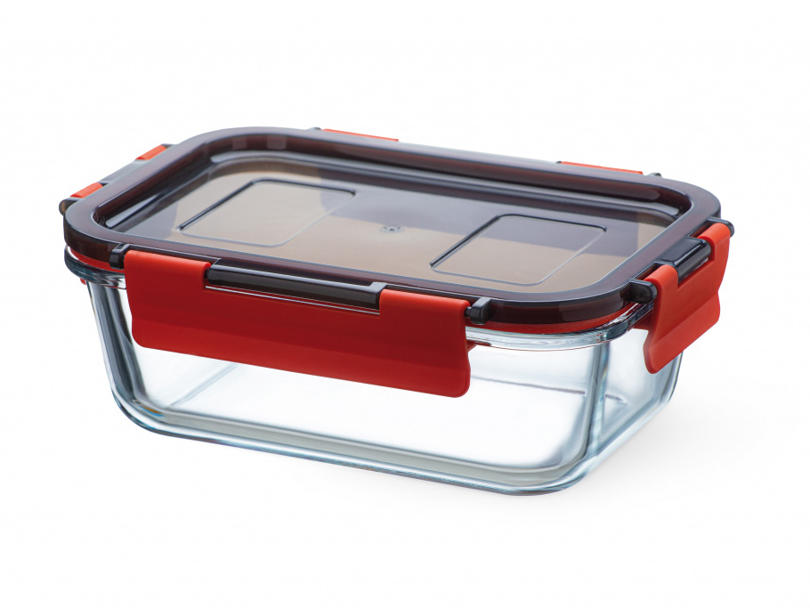
Skleněná dóza s těsnicím víkem klik-klak z borosilikátového skla SIMAX. Vhodná pro pečení, mikrovlnnou troubu, lednici, mrazák i přenos potravin.
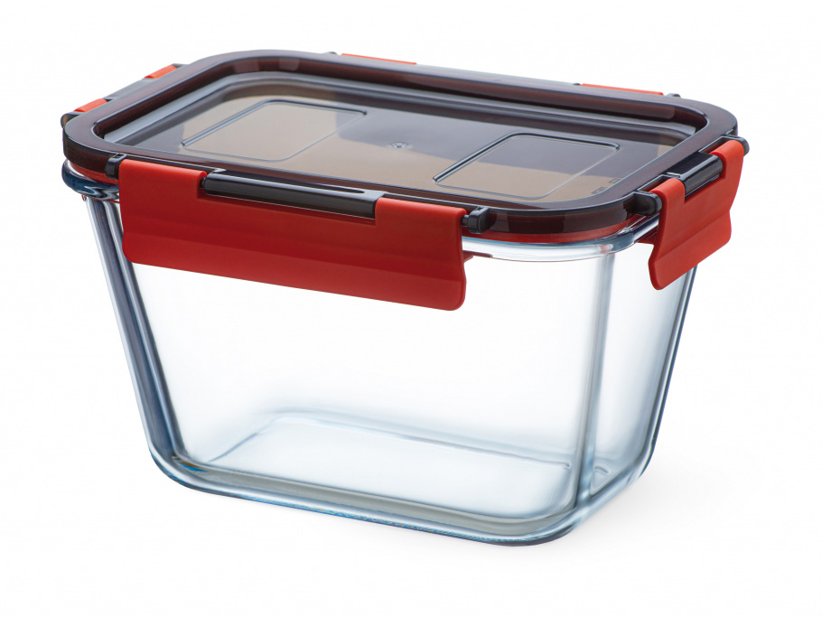
Skleněná dóza s těsnicím víkem klik-klak z borosilikátového skla SIMAX. Vhodná pro pečení, mikrovlnnou troubu, lednici, mrazák i přenos potravin.

Kulatý pekáč z varného skla se skleněným víkem 0,3 l. Vhodný pro pečení masa, zeleniny a koláčů i zapékání těstovin. Do trouby (vč. mikrovlnné), lednice a myčky.

Kulatý pekáč z varného skla se skleněným víkem 0,4 l. Vhodný pro pečení menších porcí masa, zeleniny a koláčů. Do trouby (vč. mikrovlnné), lednice a myčky.

Kulatý pekáč z varného skla se skleněným víkem 0,6 l. Vhodný pro pečení masa, zeleniny a koláčů i zapékání těstovin. Do trouby (vč. mikrovlnné), lednice a myčky.

Kulatý pekáč z varného skla se skleněným víkem 0,9 l. Vhodný pro pečení masa, zeleniny a koláčů i zapékání těstovin. Do trouby (vč. mikrovlnné), lednice a myčky.

Kulatý pekáč z varného skla se skleněným víkem 1,2 l. Vhodný pro pečení masa, zeleniny a koláčů i zapékání těstovin. Do trouby (vč. mikrovlnné), lednice a myčky.
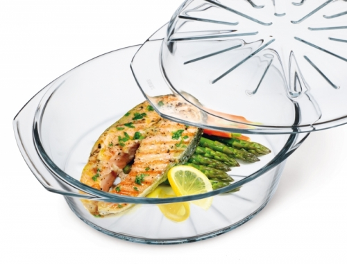
Kulatý pekáč GRIL z varného skla s vroubkovaným dnem a víkem 1,2 l. Vroubkování pomáhá odvádět tuk při pečení masa. Do trouby (vč. mikrovlnné), lednice a myčky.
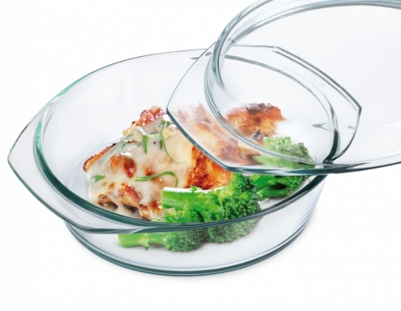
Kulatý pekáč z varného skla se skleněným víkem 1,6 l. Vhodný pro pečení větších porcí masa, zeleniny i celého kuřete. Do trouby (vč. mikrovlnné), lednice a myčky.
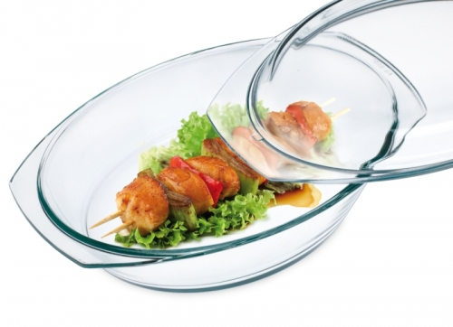
Oválný pekáč z varného skla se skleněným víkem 1,2 l. Vhodný pro pečení masa, ryb i zeleniny. Do trouby (vč. mikrovlnné), lednice a myčky.

Oválný pekáč z varného skla se skleněným víkem 1,4 l. Vhodný pro pečení masa, kachny i ryb. Do trouby (vč. mikrovlnné), lednice a myčky.
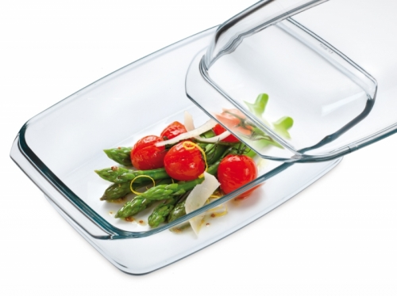
Hranatý pekáč z varného skla se skleněným víkem 2,2 l. Vhodný pro pečení masa, brambor a zapékaných pokrmů. Do trouby (vč. mikrovlnné), lednice a myčky.
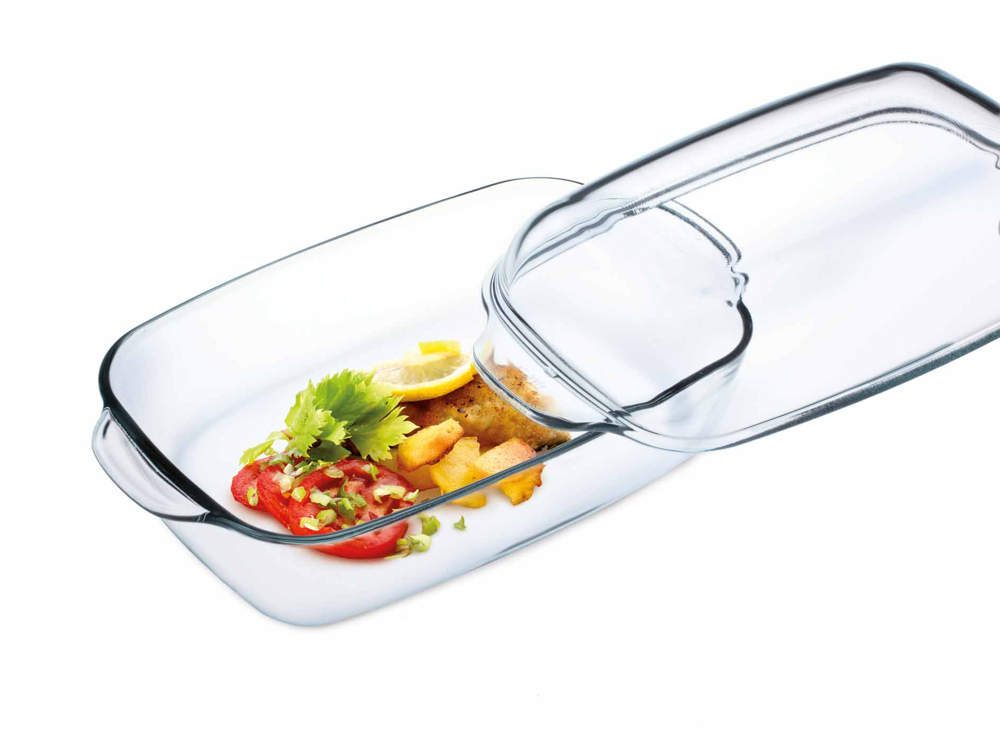
Hranatý pekáč z varného skla se skleněným víkem 2,3 l. Vhodný pro pečení masa, kuřete a zapékaných pokrmů. Do trouby (vč. mikrovlnné), lednice a myčky.
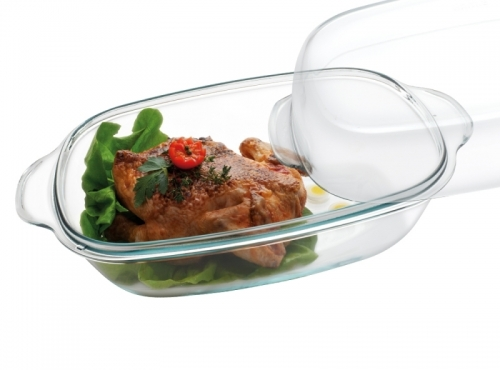
Velký hranatý pekáč z varného skla pro přípravu husy, kachny, krůty nebo většího kusu masa. Do trouby (vč. mikrovlnné), lednice a myčky.

Skleněná forma na slané i sladké koláče z borosilikátového skla SIMAX. Postupně uvolňuje teplo a těsto se ideálně propeče. Vhodná do myčky.
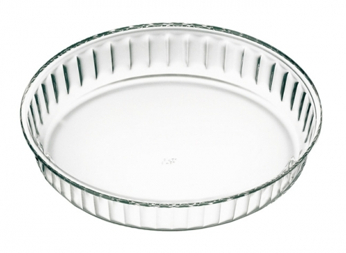
Skleněná forma na slané i sladké koláče, zápeky těstovin a brambor z borosilikátového skla SIMAX. Tepelně odolná do +300 °C, do myčky, mikrovlnné trouby i ledničky.
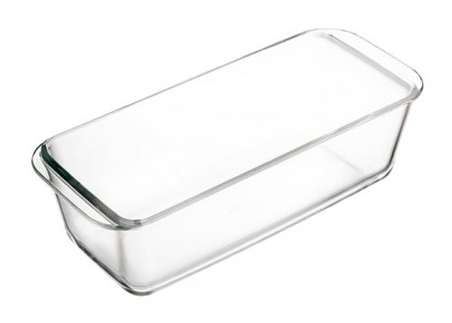
Hranatá forma na biskupský chléb a moučníky z varného borosilikátového skla SIMAX. Vhodná do všech typů trub včetně mikrovlnné, do myčky, bez olova a kadmia.
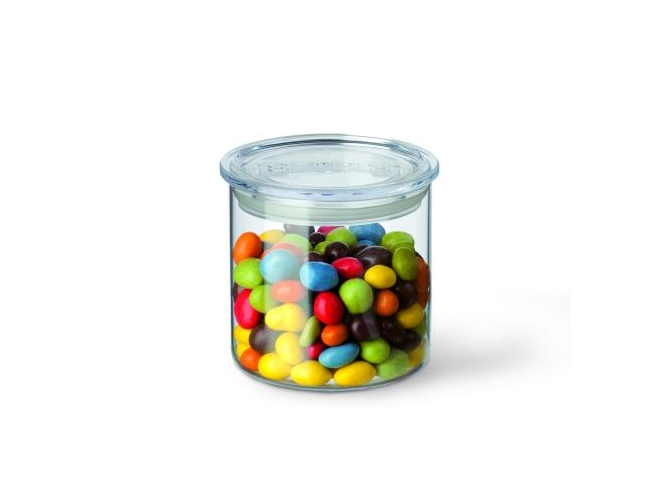
Skleněná zásobnice s plastovým víčkem se silikonovým těsněním. Vhodná pro uchování kávy, čaje, cereálií, koření a dalších sypkých potravin. Do myčky.
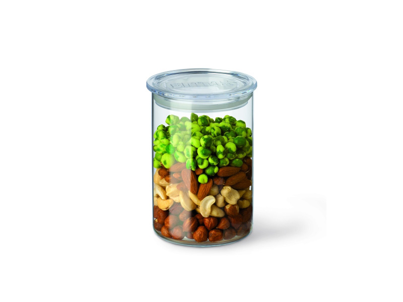
Skleněná zásobnice s plastovým víčkem se silikonovým těsněním. Vhodná pro uchování kávy, cukru, ořechů, müsli nebo sušených hub. Do myčky.
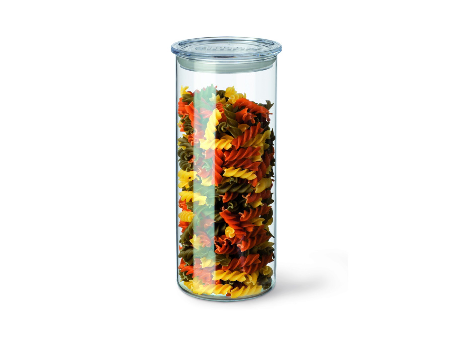
Skleněná zásobnice s plastovým víčkem se silikonovým těsněním. Vhodná pro uchování mouky, cukru, těstovin nebo rýže. Do myčky.
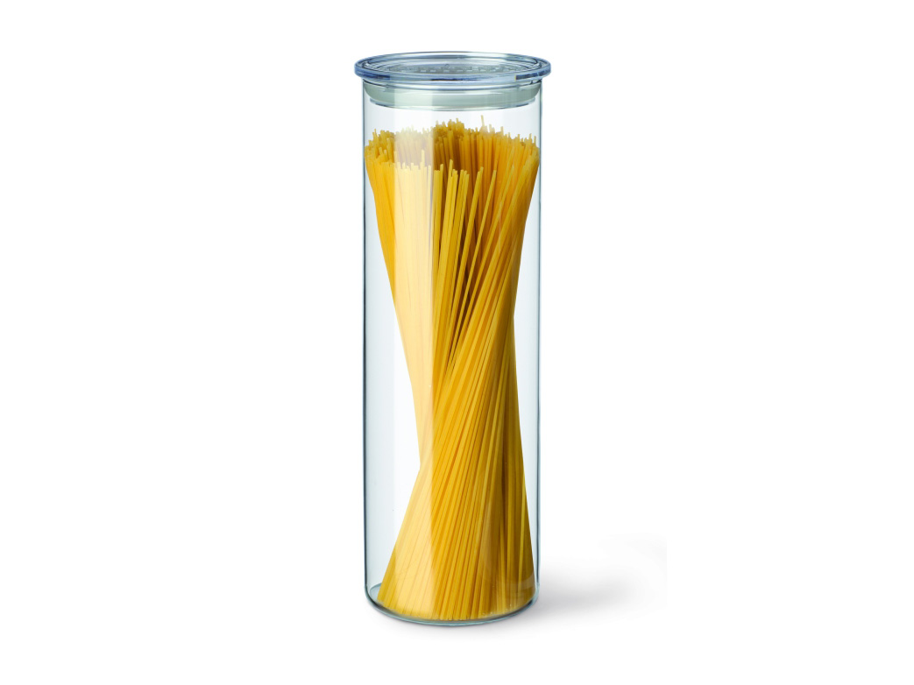
Vysoká skleněná zásobnice s plastovým víčkem se silikonovým těsněním. Ideální na mouku, cukr, špagety nebo rýži. Do myčky.
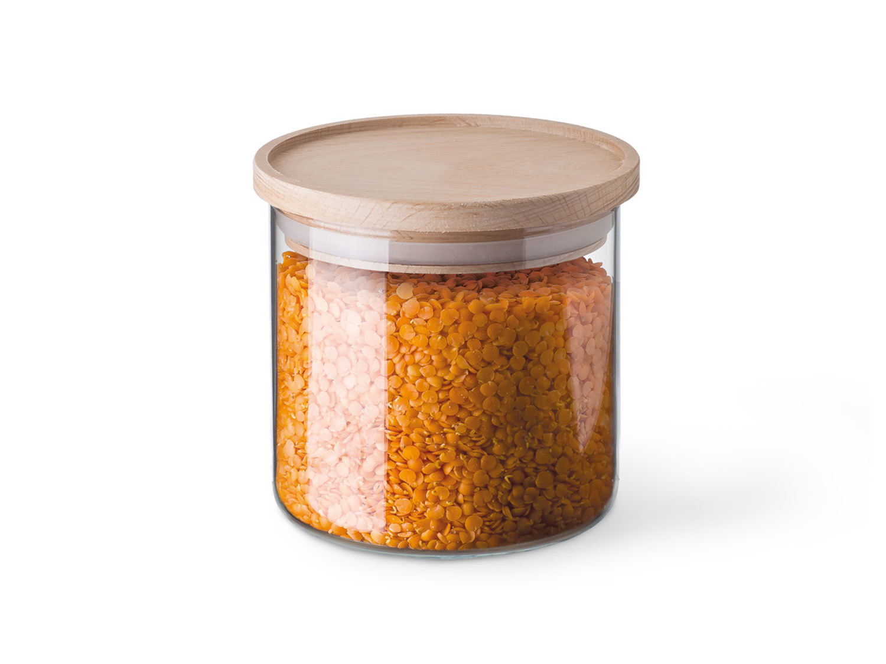
Skleněná zásobnice s dřevěným víkem a silikonovým těsněním. Atraktivní vzhled vhodný i na servírovací část kuchyně. Sklo lze mýt v myčce, víko ručně.
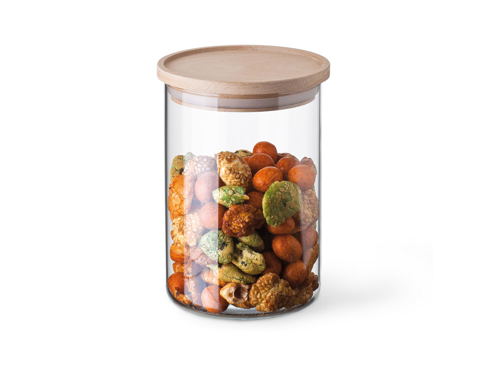
Skleněná zásobnice s dřevěným víkem a silikonovým těsněním. Atraktivní design pro spíž i kuchyňskou linku. Sklo lze mýt v myčce, víko ručně.
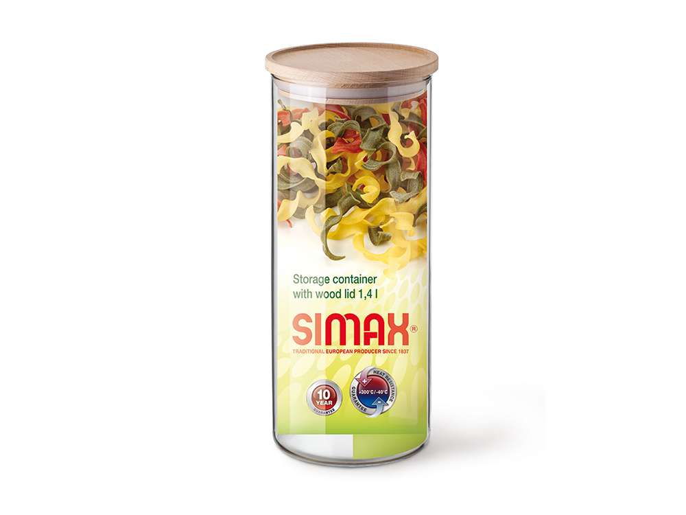
Skleněná zásobnice s dřevěným víkem a silikonovým těsněním. Atraktivní design pro spíž i kuchyňskou linku. Sklo lze mýt v myčce, víko ručně.
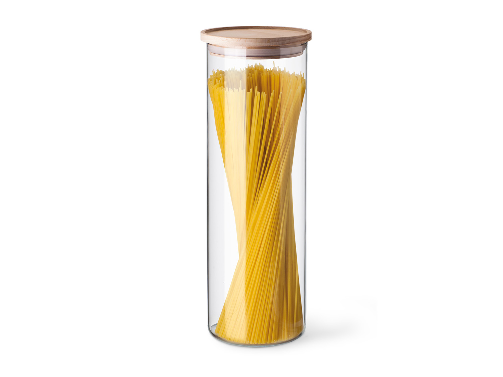
Vysoká skleněná zásobnice s dřevěným víkem a silikonovým těsněním. Atraktivní design pro spíž i prezentaci. Sklo lze mýt v myčce, víko ručně.